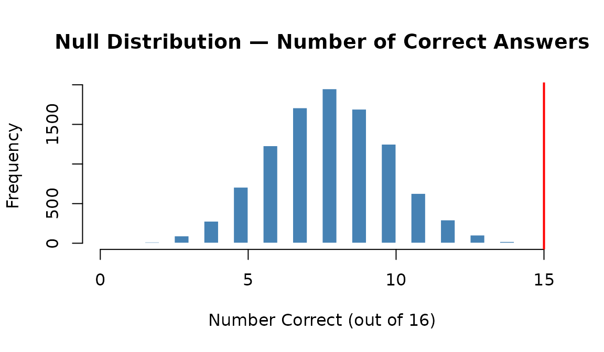
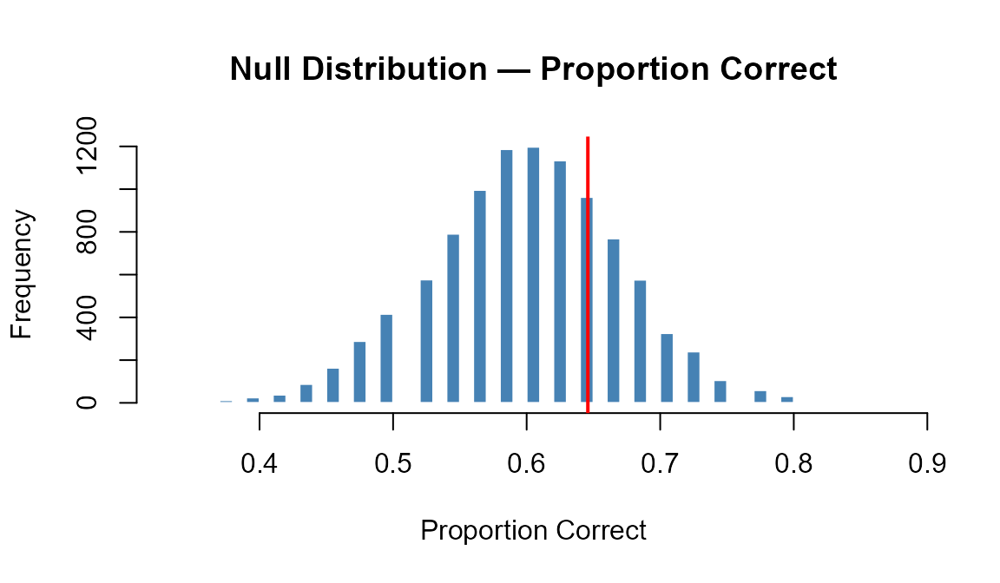
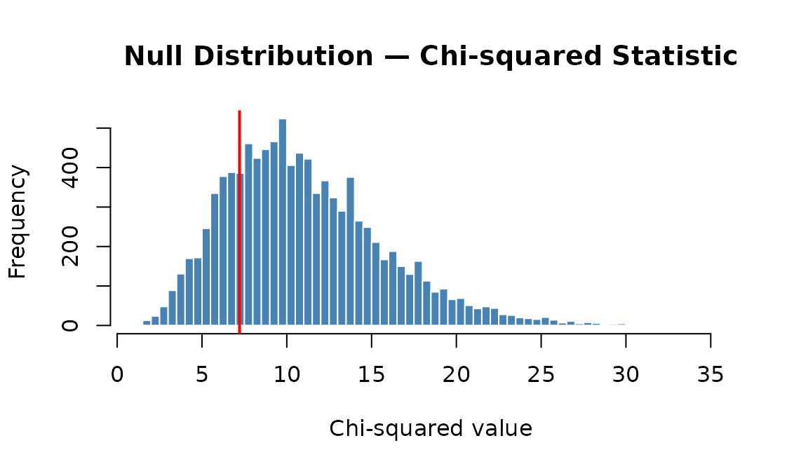
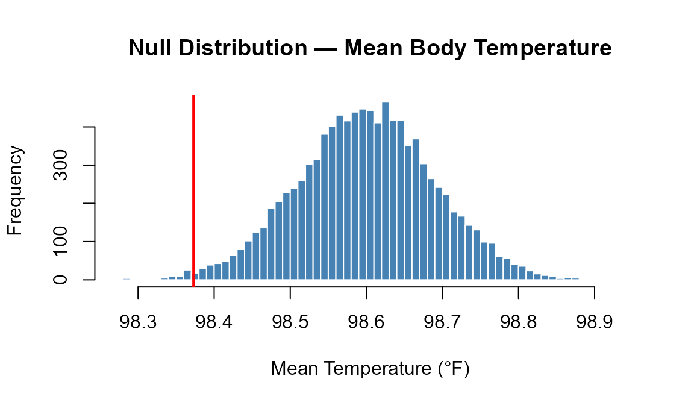
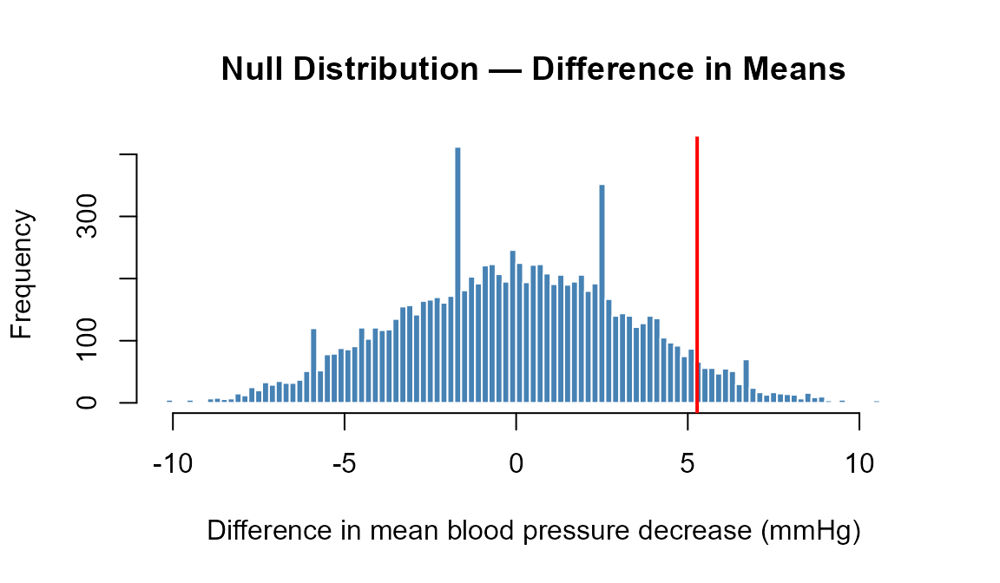
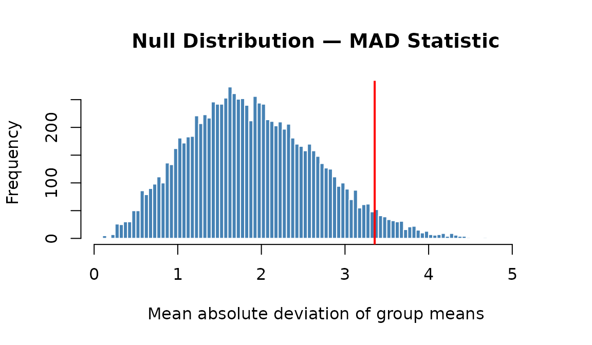
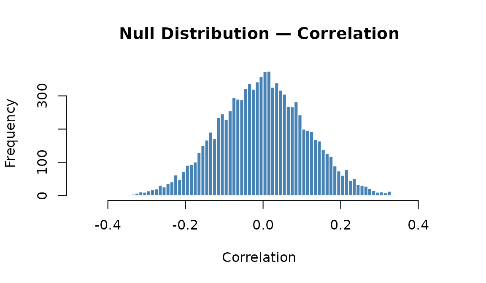
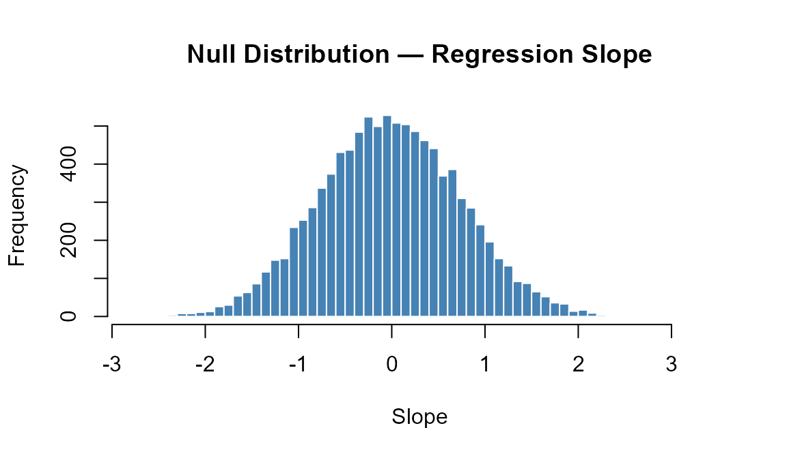

Randomization Hypothesis Tests
class-summary-randomization-tests.RmdOverview
This guide covers every randomization (simulation-based) hypothesis test from S&DS 1000. Each test follows the same five steps used in class:
- State the null and alternative hypotheses
- Calculate the observed test statistic
- Create a null distribution by simulation
- Calculate the p-value
- Make a decision
The core idea is the same for every test: if the null hypothesis were true, how extreme would our observed result be? We answer this by repeatedly simulating data under the null and seeing where our observed statistic falls.
In this article:
- One proportion
- Two proportions
- More than two proportions
- One mean
- Two means
- More than two means
- Correlation
- Simple linear regression
- Quick reference table
Also in Class Summaries:
Key SDS1000 functions used in this guide.
do_it(n) * { expr } repeats an expression n
times and collects the results. rflip(n, p) simulates
n coin flips with probability p.
rroll(n, prob) simulates rolling a die n
times. shuffle(x) randomly permutes a vector.
ptail(obs, null, lower.tail) computes the p-value from a
null distribution.
One Proportion
When to use: One categorical variable with two
outcomes; test whether the population proportion π equals a specific
value π₀. The null distribution is created by simulating coin flips
under the assumption that H₀ is true using rflip().
Example (class 12): Doris the dolphin and Buzz the dolphin were tested to see whether Buzz could identify which lever Doris was pointing to. In 16 trials, Buzz got the correct answer 15 times. Is there evidence that Buzz is doing better than random chance?
Step 2: Calculate the observed statistic
n_trials <- 16
obs_stat <- 15 # number of correct answers
obs_stat## [1] 15Step 3: Create the null distribution
Under H₀, each trial is like a fair coin flip. Use
rflip() to simulate 10,000 experiments:
set.seed(5731)
null_dist <- do_it(10000) * {
rflip(n_trials, 0.50)
}
hist(null_dist, breaks = 50,
main = "Null Distribution — Number of Correct Answers",
xlab = "Number Correct (out of 16)",
col = "steelblue", border = "white")
abline(v = obs_stat, col = "red", lwd = 2)
Step 4: Calculate the p-value
p_value <- ptail(obs_stat, null_dist, lower.tail = FALSE)
p_value## [1] 5e-04Step 5: Make a decision
Since p = 0.0005 < 0.05, we reject H₀ and conclude that Buzz appears to be doing better than random chance.
Second example (class 13): A lie detector correctly identified 31 out of 48 participants as lying. Is this evidence the detector is more than 60% accurate?
set.seed(9021)
n <- 48
obs_phat <- 31 / 48
null_dist <- do_it(10000) * {
rflip(n, 0.60) / n
}
hist(null_dist, breaks = 60,
main = "Null Distribution — Proportion Correct",
xlab = "Proportion Correct",
col = "steelblue", border = "white")
abline(v = obs_phat, col = "red", lwd = 2)
p_value <- ptail(obs_phat, null_dist, lower.tail = FALSE)
p_value## [1] 0.3084Since p = 0.308 > 0.05, we fail to reject H₀. There is not sufficient evidence that the lie detector exceeds 60% accuracy.
Two Proportions
When to use: A binary outcome measured in two independent groups; test whether the two population proportions are equal.
Key idea: Under H₀ (π₁ = π₂), both groups share the same true proportion. We estimate this overall proportion by pooling the two samples:
We then simulate each group independently using this pooled rate with
rflip(), mimicking what we would observe if H₀ were
true.
Example: In a clinical trial, 245 patients received a new vaccine and 255 received a placebo. Of the vaccinated group 32 got the flu; of the placebo group 56 got the flu. Is there evidence that the vaccine reduces the flu rate?
Step 2: Calculate the observed statistic
x1 <- 32 # vaccinated
n1 <- 245
x2 <- 56 # placebo
n2 <- 255;
obs_phat1 <- x1 / n1
obs_phat2 <- x2 / n2
obs_stat <- obs_phat1 - obs_phat2 # negative if vaccine reduces flu
obs_stat## [1] -0.0889956Step 3: Create the null distribution
Compute the overall proportion, then simulate each group with
rflip() at that pooled rate:
set.seed(4412)
overall_prop <- (x1 + x2) / (n1 + n2)
overall_prop## [1] 0.176
null_dist <- do_it(10000) * {
sim_phat1 <- rflip(n1, overall_prop) / n1
sim_phat2 <- rflip(n2, overall_prop) / n2
sim_phat1 - sim_phat2
}
hist(null_dist, breaks = 80,
main = "Null Distribution — Difference in Proportions",
xlab = expression(hat(p)[1] - hat(p)[2]),
col = "steelblue", border = "white")
abline(v = obs_stat, col = "red", lwd = 2)Step 4: Calculate the p-value
# Lower-tail: H_A is that the vaccinated proportion is smaller
p_value <- ptail(obs_stat, null_dist, lower.tail = TRUE)
p_value## [1] 0.0034More Than Two Proportions
When to use: One categorical variable with three or
more outcomes; test whether the population proportions match a set of
expected values. The observed statistic is the chi-squared statistic;
the null distribution is created by simulating random samples from the
expected distribution using rroll().
Example (class 23): A Yale professor examined the birth months of 198 randomly selected Yale students. Are students equally likely to be born in any month?
Step 2: Calculate the observed statistic
observed_counts <- c(14, 11, 21, 17, 15, 13, 19, 16, 18, 22, 14, 18)
names(observed_counts) <- month.abb
expected_counts <- rep(sum(observed_counts) / 12, 12)
obs_stat <- sum((observed_counts - expected_counts)^2 / expected_counts)
obs_stat## [1] 7.212121Step 3: Create the null distribution
Under H₀, birth months are equally likely. Use rroll()
to simulate 10,000 samples of 198 students from a uniform distribution
across 12 months:
set.seed(3341)
n_students <- sum(observed_counts)
expected_counts <- expected_counts
null_dist <- do_it(10000) * {
sim_counts <- rroll(n_students, prob = rep(1/12, 12))
sum((sim_counts - expected_counts)^2 / expected_counts)
}
hist(null_dist, breaks = 60,
main = "Null Distribution — Chi-squared Statistic",
xlab = "Chi-squared value",
col = "steelblue", border = "white")
abline(v = obs_stat, col = "red", lwd = 2)
Step 4: Calculate the p-value
p_value <- ptail(obs_stat, null_dist, lower.tail = FALSE)
p_value## [1] 0.7917One Mean
When to use: A single quantitative variable; test whether the population mean μ equals a specific value μ₀. Unlike the proportion test, there is no natural coin-flip simulation for a mean. Instead, we use a bootstrap-based procedure: shift the data so that its mean equals μ₀ (making it consistent with H₀), then resample from that shifted data.
Key idea: Subtracting the sample mean and adding μ₀ centers the data at the null value without changing its spread or shape:
data_H0 <- my_data - mean(my_data) + mu_0Resampling with replacement from data_H0 then generates
statistics that reflect what we would expect under H₀.
Example: It is widely assumed that the average human body temperature is 98.6°F. A sample of 50 body temperatures from Mackowiak et al. (1992) had a mean of 98.25°F. Is there evidence that the true mean differs from 98.6°F?
Step 2: Calculate the observed statistic
set.seed(9910)
body_temps <- rnorm(50, mean = 98.25, sd = 0.73) # fake simulated data with mu = 98.25
obs_mean <- mean(body_temps)
obs_mean## [1] 98.37283Step 3: Create the null distribution
Shift the data to have mean exactly equal to μ₀ = 98.6, then resample with replacement 10,000 times:
set.seed(3345)
mu_0 <- 98.6
data_H0 <- body_temps - mean(body_temps) + mu_0 # shift to be consistent with H0
n <- length(body_temps)
null_dist <- do_it(10000) * {
resampled_data <- sample(data_H0, n, replace = TRUE)
mean(resampled_data)
}
hist(null_dist, breaks = 80,
main = "Null Distribution — Mean Body Temperature",
xlab = "Mean Temperature (°F)",
col = "steelblue", border = "white")
abline(v = obs_mean, col = "red", lwd = 2)
Step 4: Calculate the p-value
This is a two-sided test (H₀: μ ≠ 98.6), so we count values in both tails that are at least as far from μ₀ as the observed mean:
param_stat_margin <- abs(obs_mean - mu_0)
p_value_left <- ptail(mu_0 - param_stat_margin, null_dist, lower.tail = TRUE)
p_value_right <- ptail(mu_0 + param_stat_margin, null_dist, lower.tail = FALSE)
p_value <- p_value_left + p_value_right
p_value## [1] 0.0114Two Means
When to use: A quantitative variable measured in two
independent groups; test whether the two group means are equal. The null
distribution is created by using shuffle() to randomly
reassign group labels — under H₀, group membership doesn’t matter.
Observed statistic: Difference in group means:
Example (class 17): A randomized controlled trial (Lyle et al., 1987) gave calcium supplements to 10 men (treatment) and a placebo to 11 men (control). The outcome is the decrease in blood pressure. Is there evidence that calcium produces a greater decrease?
Step 2: Calculate the observed statistic
treat <- c( 7, -4, 18, 17, -3, -5, 1, 10, 11, -2)
control <- c(-1, 12, -1, -3, 3, -5, 5, 2, -11, -1, -3)
obs_stat <- mean(treat) - mean(control)
obs_stat## [1] 5.272727Step 3: Create the null distribution
Combine both groups into one vector and use shuffle() to
randomly reassign group labels 10,000 times:
set.seed(6174)
combined_data <- c(treat, control)
null_dist <- do_it(10000) * {
shuff <- shuffle(combined_data)
shuff_treat <- shuff[1:10]
shuff_control <- shuff[11:21]
mean(shuff_treat) - mean(shuff_control)
}
hist(null_dist, breaks = 100,
main = "Null Distribution — Difference in Means",
xlab = "Difference in mean blood pressure decrease (mmHg)",
col = "steelblue", border = "white")
abline(v = obs_stat, col = "red", lwd = 2)
Step 4: Calculate the p-value
p_value <- ptail(obs_stat, null_dist, lower.tail = FALSE)
p_value## [1] 0.0605More Than Two Means
When to use: A quantitative variable measured across
three or more independent groups; test whether all group means are
equal. The observed statistic is the mean absolute deviation
(MAD) of group means — the average of all pairwise absolute
differences between group means. The null distribution is created by
using shuffle() on the group labels.
Example (class 17/18): Hope College students were timed completing a Sudoku-like puzzle, grouped into four majors. Is there a difference in mean completion time?
Step 2: Calculate the observed statistic
set.seed(4455)
completion_times <- c(rnorm(10, mean = 22, sd = 5),
rnorm(10, mean = 20, sd = 5),
rnorm(10, mean = 26, sd = 5),
rnorm(10, mean = 21, sd = 5))
majors <- rep(c("Applied Sci", "Natural Sci", "Social Sci", "Arts/Hum"),
each = 10)
boxplot(completion_times ~ majors,
main = "Completion Time by Major",
ylab = "Time (seconds)",
col = c("lightblue", "lightgreen", "lightpink", "lightyellow"))
obs_stat <- get_MAD_stat(completion_times, majors)
obs_stat## [1] 3.354879Step 3: Create the null distribution
Use shuffle() on the group labels to break any real
association:
set.seed(8812)
completion_times <- completion_times
majors <- majors
null_dist <- do_it(10000) * {
shuffled_majors <- shuffle(majors)
get_MAD_stat(completion_times, shuffled_majors)
}
hist(null_dist, breaks = 100,
main = "Null Distribution — MAD Statistic",
xlab = "Mean absolute deviation of group means",
col = "steelblue", border = "white")
abline(v = obs_stat, col = "red", lwd = 2)
Step 4: Calculate the p-value
p_value <- ptail(obs_stat, null_dist, lower.tail = FALSE)
p_value## [1] 0.0416Step 5: Make a decision
Since p = 0.042, we reject H₀ at the α = 0.05 level.
What is the MAD statistic?
get_MAD_stat() computes the mean of all pairwise absolute
differences between group means:
It is sensitive to any difference between group means, making it a
natural choice for a general alternative hypothesis.
Note: when running randomization tests, we can use
any statistic that captures the aspect of the data we want to test. For
example, here we could have used the ANOVA F-statistic instead of MAD,
and the procedure would be the same — just replace
get_MAD_stat() with a function that computes the
F-statistic get_F_stat(). The choice of statistic is
flexible, but it should be chosen thoughtfully to reflect the research
question.
Correlation
When to use: Two quantitative variables; test
whether the population correlation ρ equals zero. The null distribution
is created by using shuffle() on one of the two variables —
this breaks any real relationship while preserving the marginal
distributions.
Example (class 18): A dataset of 77 breakfast cereals recorded sugar content and calorie content. Is there evidence of a positive correlation?
Step 2: Calculate the observed statistic
set.seed(1123)
# Simulated to match class 18 cereal data structure
n <- 77
sugar <- runif(n, 0, 15)
calories <- 90 + 3.5 * sugar + rnorm(n, sd = 12)
plot(sugar, calories,
main = "Calories vs Sugar in Cereals",
xlab = "Sugar (grams)", ylab = "Calories")
obs_stat <- cor(sugar, calories)
obs_stat## [1] 0.8149169Step 3: Create the null distribution
Use shuffle() on the sugar values to destroy any
correlation with calories:
set.seed(5671)
sugar <- sugar
calories <- calories
null_dist <- do_it(10000) * {
cor(shuffle(sugar), calories)
}
hist(null_dist, breaks = 80,
main = "Null Distribution — Correlation",
xlab = "Correlation",
col = "steelblue", border = "white")
abline(v = obs_stat, col = "red", lwd = 2)
Step 4: Calculate the p-value
p_value <- ptail(obs_stat, null_dist, lower.tail = FALSE)
p_value## [1] 0Simple Linear Regression
When to use: Two quantitative variables where you
want to test whether the slope of a linear regression model is
significantly different from zero. The null distribution is created by
using shuffle() on the response variable — under H₀ (no
relationship), the pairing between x and y is arbitrary.
Example (class 25): Data on cigarette consumption per capita and lung cancer rates across U.S. states. Is there evidence of a positive slope?
Step 2: Calculate the observed statistic
set.seed(2947)
cigs_per_capita <- runif(44, min = 10, max = 45) # create fake simulated data
cancer_rate <- 2 + 0.005 * cigs_per_capita * 1000 + rnorm(44, sd = 5)
plot(cigs_per_capita, cancer_rate,
xlab = "Cigarettes per Capita (hundreds)",
ylab = "Lung Cancer Rate per 100,000",
main = "Lung Cancer Rate vs. Cigarette Consumption")
lung_lm <- lm(cancer_rate ~ cigs_per_capita)
obs_slope <- coef(lung_lm)["cigs_per_capita"]
obs_slope## cigs_per_capita
## 4.997922Step 3: Create the null distribution
Use shuffle() on the cancer rate values — this breaks
the association with cigs_per_capita while keeping both
variables’ distributions intact:
set.seed(3318)
null_dist <- do_it(10000) * {
shuffled_cancer <- shuffle(cancer_rate)
null_lm <- lm(shuffled_cancer ~ cigs_per_capita)
coef(null_lm)["cigs_per_capita"]
}
hist(null_dist, breaks = 80,
main = "Null Distribution — Regression Slope",
xlab = "Slope",
col = "steelblue", border = "white")
abline(v = obs_slope, col = "red", lwd = 2)
Step 4: Calculate the p-value
p_value <- ptail(obs_slope, null_dist, lower.tail = FALSE)
p_value## [1] 0Quick Reference
| Test | Observed statistic | How to simulate the null | p-value |
|---|---|---|---|
| One proportion | Count or proportion | do_it(n) * { rflip(n, pi_0) } |
ptail(obs, null, lower.tail = ...) |
| Two proportions | do_it(n) * { rflip(n1, p_pool)/n1 - rflip(n2, p_pool)/n2 } |
ptail(obs, null, lower.tail = ...) |
|
| Multiple proportions | Chi-squared: | do_it(n) * { rroll(n, expected_p) } |
ptail(obs, null, lower.tail = FALSE) |
| One mean | Shift: data_H0 <- x - mean(x) + mu_0, then
resample |
ptail(abs(obs-mu_0), abs(null-mu_0), lower.tail=FALSE) |
|
| Two means | do_it(n) * { shuff <- shuffle(combined); ... } |
ptail(obs, null, lower.tail = ...) |
|
| More than two means | MAD: get_MAD_stat()
|
do_it(n) * { get_MAD_stat(y, shuffle(groups)) } |
ptail(obs, null, lower.tail = FALSE) |
| Correlation |
cor(x, y)
|
do_it(n) * { cor(shuffle(x), y) } |
ptail(obs, null, lower.tail = ...) |
| Regression slope |
from lm()
|
do_it(n) * { coef(lm(shuffle(y) ~ x))[2] } |
ptail(obs, null, lower.tail = ...) |